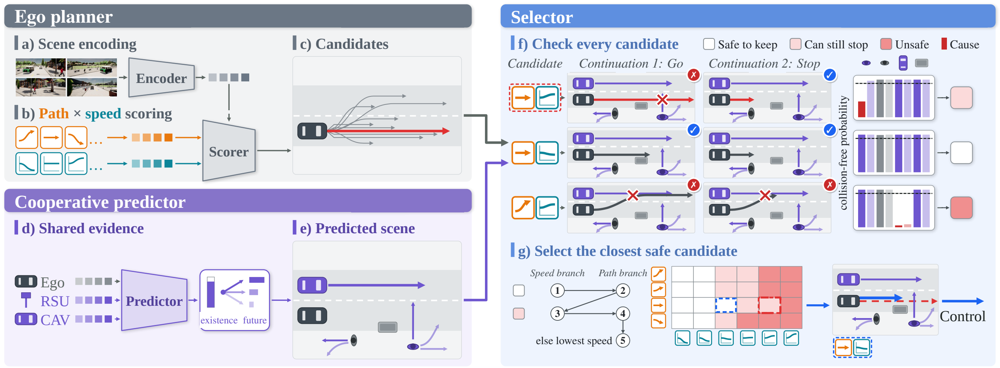
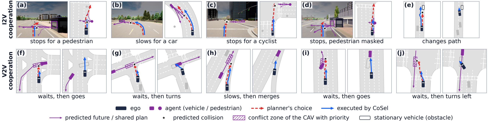

Abstract
Cooperative driving can extend a vehicle’s awareness beyond its own sensors, but existing cooperative end-to-end methods inject shared information into the planner and rely on cooperative driving demonstrations to learn how to use it. The moments in which shared information should change a driving decision are rare in such data, providing limited supervision for learning this behavior. We argue that cooperation need not be learned by the planner. Instead, reacting to shared information requires predicting how surrounding agents will move and selecting a response from the candidate trajectories of an ego planner. We introduce CoSel, a cooperation-as-selection framework that leaves the planner and its ego-only input unchanged. A separately trained cooperative predictor uses observations from the ego vehicle, roadside units, and connected automated vehicles to predict surrounding agents and their future motion. CoSel evaluates the planner’s candidate trajectories against these predictions, preserves the planner’s choice when it remains safe, and selects the closest safe alternative when shared information reveals additional risk. Each safety intervention is traceable to the shared evidence that triggers it. In closed-loop evaluation, CoSel achieves a driving score of 70.7 on V2Xverse, outperforming the best compared cooperative method by 7.5 points, and the highest average driving score of 85.8 on MDrive. Under missing ego detections, the collision count of CoSel increases only from 17 to 19 in 72 scenarios, compared with 19 to 32 for an existing cooperative end-to-end model.
Method


Panel-by-panel description
(a–c) The ego planner scores paths and speed profiles from the ego’s own cameras and proposes its candidates (gray) and its choice (red). (d, e) The cooperative predictor takes the detections of the ego, RSUs and CAVs and predicts whether each agent exists and how it will move. (f) The selector tests every candidate against every agent of the scene for its two continuations: Go, the ego keeps executing the candidate, and Stop, the ego brakes to a standstill; a badge marks whether a continuation stays free of a predicted collision. A pair of bars belongs to one agent and gives the probability that Go (dark) and Stop (light) stay free of a collision with it. Gray bars are agents that the ego detects, purple bars agents that an RSU or a CAV reports, and the dashed line is the required level; a red bar marks the agent that caused the intervention. (g) The selector executes the candidate (blue dashed) closest to the planner’s choice (red dashed) among those that pass for every agent, searching in the order 1–5.
Qualitative Results


Quantitative Results
Closed-loop evaluation on V2Xverse and MDrive. The highlighted row is CoSel.
V2Xverse-85
Every method run by us on the same 85 route–scenario pairs. Ped / Veh / Lay: collisions per km. Bold: best in each group. DS: driving score. RC: route completion. IS: infraction score. Lay: layout.
| Method | DS↑ | RC↑ | IS↑ | Ped↓ | Veh↓ | Lay↓ |
|---|---|---|---|---|---|---|
| Ego-only | ||||||
| CoDriving No fusion | 55.8 | 93.8 | 0.58 | 3.99 | 11.54 | 6.21 |
| TCP | 66.7 | 80.7 | 0.83 | 2.71 | 2.88 | 0.51 |
| CoSel planner only | 57.6 | 79.8 | 0.75 | 5.12 | 2.39 | 1.88 |
| Cooperative | ||||||
| CoDriving Late fusion | 63.2 | 96.3 | 0.65 | 2.85 | 8.15 | 5.43 |
| CoDriving Early fusion | 56.7 | 92.9 | 0.60 | 3.88 | 12.25 | 2.54 |
| F-Cooper | 50.8 | 93.5 | 0.54 | 6.40 | 9.59 | 6.95 |
| V2X-ViT | 52.0 | 85.9 | 0.59 | 7.91 | 6.57 | 0.60 |
| CoDriving | 59.1 | 96.3 | 0.61 | 4.21 | 9.11 | 5.98 |
| CoSel | 70.7 | 88.7 | 0.79 | 3.04 | 1.45 | 1.88 |
MDrive
DS / SR per subset and their mean. Baselines as published by the MDrive benchmark, rounded to one decimal; CoSel run by us. *rule-based variant. Bold: best in each group. SR: success rate.
| InterDrive | Interaction | V2XPnP | Mean | |||||
|---|---|---|---|---|---|---|---|---|
| Method | DS | SR | DS | SR | DS | SR | DS | SR |
| Ego-only | ||||||||
| TCP | 83.6 | 67.8 | 75.8 | 55.3 | 71.0 | 58.7 | 76.8 | 60.6 |
| UniAD | 57.5 | 26.4 | 53.1 | 31.1 | 72.6 | 68.5 | 61.0 | 42.0 |
| VAD | 57.5 | 23.3 | 48.8 | 27.1 | 67.2 | 66.3 | 57.8 | 38.9 |
| LMDrive | 56.7 | 27.1 | 57.5 | 29.1 | 71.6 | 69.6 | 61.9 | 41.9 |
| CoSel planner only | 86.0 | 78.8 | 76.9 | 65.6 | 83.7 | 71 | 82.2 | 72 |
| Cooperative | ||||||||
| CoDriving | 84.0 | 66.1 | 79.1 | 70.5 | 85.0 | 82.8 | 82.7 | 73.2 |
| CoLMDriver* | 83.8 | 75.1 | 66.7 | 53.7 | 77.9 | 73.1 | 76.1 | 67.3 |
| CoLMDriver | 85.3 | 76.9 | 67.9 | 51.9 | 78.3 | 75.4 | 77.2 | 68.1 |
| CoSel | 89.6 | 81.1 | 80.5 | 68.2 | 87.3 | 84.9 | 85.8 | 78.1 |
BibTeX
@article{li2026cosel,
title = {{CoSel}: Cooperation as Selection for End-to-End Driving},
author = {Li, Yiping and Que, Haohua and Bao, Zhipeng and Zhao, Wenjie and Li, Qianwen},
journal = {arXiv preprint},
year = {2026}
}